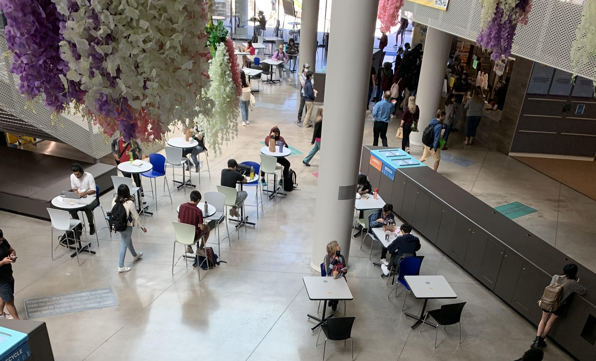
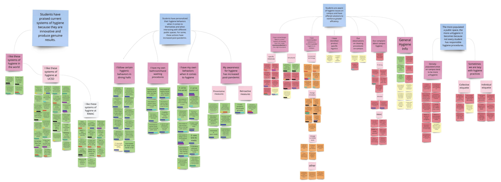

Overview
Project Context
There is always potential for improvement in the
technological, social, and economic realm that is present on any
college campus. But in the wake of a world-scale pandemic, the importance
of hygiene has become more evident than ever. While measures such as
hand sanitizing stations have been implemented to encourage frequent
hand cleaning, not all germs can be killed by hand sanitizers. Visitors
to UCSD need more effective and convenient ways in order to improve
their hygiene on campus.
To address the problem space of hygiene on campus, our group identified
many potential issues and developed a solution that would promote public hygiene.
The final design of our product addresses these issues by providing
a convenient and space-saving solution that separates drinking water
from the sinks, thus promoting public hygiene.
User Research
Finding the problem space: What did we find were common issues?
We began our journey trying to find the problem space by brainstorming
ways to improve circumstances for students on campus, such as study tools,
consumer-seller transparency, or on-campus parking, etc. by using a
survey to identify problems in task flow in many students’ daily routine.
Through our 20 survey responses from students and faculty, we narrowed
our topic down to collective hygiene in densely populated areas.
We conducted targeted ethnographic research by observing students’
interactions in Price Center and other dining halls on campus, observing
handwashing, the student’s location from the bathrooms, and any handwashing
signage in the bathrooms. Finally, with the data collected through
this observation, we conducted further interviews of UCSD students
in Price Center to interact and get better insight into the practices
and reasoning behind their actions.

Consolidating our research: What do our results tell us?
After gathering our research data, we utilized affinity diagrams to
group our results into categories using color-coded sticky notes.
These were sorted by pertinent hygiene factors and broke them down based
on the level of hygiene they concerned, as well as the degree of hygiene conducted.
Additionally, each group member created a user persona that encapsulated
a stakeholder to allow us to empathize with the people affected by our designs.

Our project identified several key areas of focus. First, we found that
densely populated areas on campus are the most unhygienic due to the
sheer number of people passing by and the shortage of janitorial staff.
Second, we recognize that people need to be prompted to increase their
cleaning habits through authoritarian figures, posted notices, or
enforced policies. Finally, we observed that individuals will avoid
unclean areas and will only take it upon themselves to clean up the
space if there are no clean locations available. From these 3 points,
we decided to build upon the current systems of hygiene to make them more
convenient and user-friendly. By doing so, we hope to maximize their
potential and encourage wider adoption of these practices to create
a cleaner and more hygienic environment for everyone on campus.
Ideation
What direction do we want to go in the field of hygiene?
During our project, we generated multiple ideas to tackle the hygiene
issues identified in our research. After consolidating our ideas, we
narrowed them down to three concepts: a trash-robot that can also
clean the floor, a public sink located in a central location for
easier access, and table sensors to detect when a table needs cleaning.
To evaluate each concept, we generated storyboards to visualize the user
experience and we discussed the pros and cons of each idea and eventually
decided on the one that would be most feasible, socially accepted,
and economically viable. Ultimately, this helped us develop a more
focused and effective final product.
Prototyping
What will our product ultimately look like?
During our project, we faced several challenges while designing features
for our new sink. We began by having each group member sketch out
potential designs for the sink. During our comparison stage, we debated
whether to use pedals or sensors to activate the sink, whether to
combine the sink with a water fountain, and how to arrange multiple
sinks in one unit. We also had to consider the placement of objects
such as the soap dispenser and paper towel dispenser. Finally, to
prepare for user testing, we created 3 Figma prototypes where each
prototype featured a different placement or type of arrangement for the sink.
Validation Testing
Which features are the best to implement?
During our project, we conducted interviews and ABC
testing (a variation of AB testing with 3 variables/designs) to gather
feedback on our Figma prototypes. We walked participants through the
three designs and asked for their feedback, focusing on which aspects
they preferred and whether the design would address public hygiene needs.
The results of the testing showed that participants preferred a
separation of drinking water and the sink for sanitation purposes.
We had initially considered combining multiple features to save space,
but through this test, we realized this approach took us further away
from our initial goal of promoting hygienic practices. Another important
point was that pedals were preferred over sensors because the participants
expressed how sensors are more prone to failure. Finally, the participants
expressed concerns about line aggregation in models that combined
a sink and a drinking fountain/water bottle refilling station. These
insights helped us to refine our design and develop a more effective
product that better addressed the needs of our stakeholders.